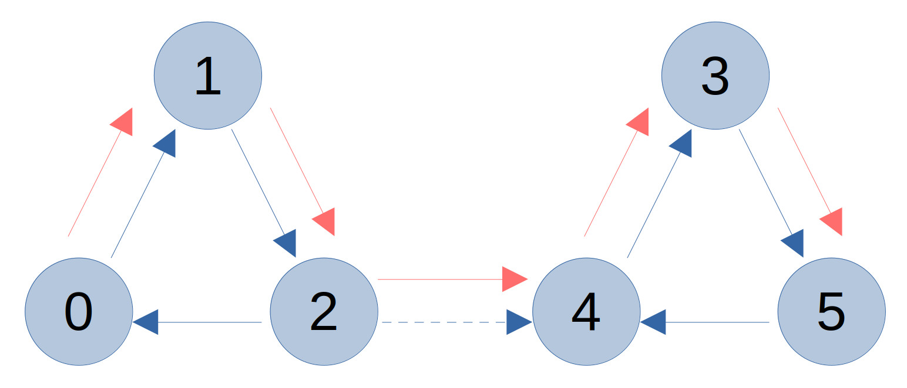

Trees and Graphs
Trees and graphs are import programming data structures that have many uses and applications. To begin with I will go through a tree example an associated C++ code. The code example below is a solution for a question in "Cracking the Code Interview" which asks:
4.1 Route Between Nodes: Given a directed graph, design an algorithm to find out whether there is a route between two nodes.
I have created a simple graph with 6 nodes that are initially separated but can be joined with a flag. The below diagram shows the graph with directional connections in blue and the found path between nodes 0 and 5 in red.

My Solution for the Route Between Nodes Problem
First some boilerplate for C++. I'm making use of the standard library headers and then adding the using statments for the elements that I require. This practice avoids namespace pollution and allows the types to be used without scoping (e.g.std::string my_string; becomes string my_string;).
Now to define the Node class for the directed graph. The name field contains the Node number, the vector node_list contains pointers to all the connected nodes and bool visited is used in the algorithm to keep track of visited nodes. I'm wrapping the Node pointers in a shared_ptr to improvement memory management.
The constructor uses an initialiser list to set the name and set visited to false upon creation.
The function below is used to create the graph shown in the diagram above. First a loop is used to create all the nodes using dynamic allocation. After that the node connections are defined. There is a flag called add_connection that adds the connection between nodes 2 and 4 when set to true.
It's worth noting that accessing the node elements using the [] notation could be altered to Use
the .at method instead. This would be a safer way to do it. I.e nodes.at(0)->append(nodes.at(1));
I have used the bracket notation for readability in this example.
The route_between_nodes function is where the action happens. This function takes in a pointer to the inital node in the search (n1) as well as an integer name for the desired end node (n2). It would have been nice to have both parameters be a pointer or an int however that would require a search function to be added in order to get the reference to a node based in it's name.
The algorithm is based on a Depth First Search and uses a queue to keep track of neighbour nodes to visit. A while loop is used to search the remaining Node references that are stored in the queue. If the desired end point is found the loop is broken and the function returns true. If the desired end node is not found the neighbours of the current node are iterated over and added to the queue.
It's important to keep track of which nodes have been visited so that infinite cycles do not occur. A node is set to visited at the beginning of the while loop and then the visited flags are checked for each neighbour before adding neighbour nodes to the queue.
The main function is used to run the tests for the algorithm. It is first run with the flag set to false which creates the non-connected graph. Then the flag is set to true and the program is run again to produce the second output which finds the path between node 0 and node 5.
First the program is tested without the link between nodes 2 and 4 added. The output of the program is:
Next, the link between nodes 2 and 4 is added. The output of the program is:
The code is working as expected! Further improvements could be made such as the use of weak pointers to avoide circular references and the inclusion of error handling.